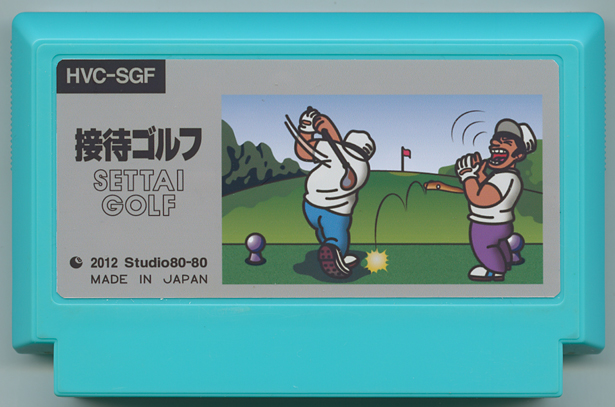

接待ゴルフ
kamonegi／会社員
このゲームの目的は良いスコアではありません。本作「接待ゴルフ」では、時にはミスショットで相手に華を持たせ、時にはあえて好ショットを連発して相手のライバル心をあおり、顧客のハートをガッチリつかみ、契約を勝ち取ることがゴールなのです。顧客は「ウチの係長」「取引先の社長」「官僚」「国会議員」「総理」「アメリカ大統領」など全２５６種類。ノーマルモードクリア後には、複数の顧客を同時に接待して顧客同士を契約させるエキスパートモードが楽しめます。